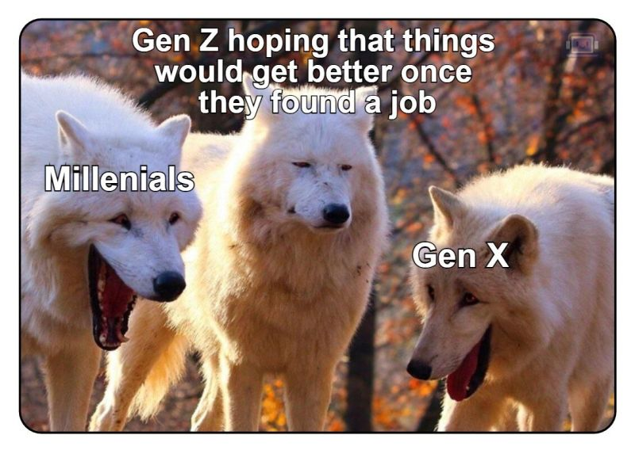
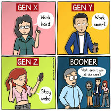
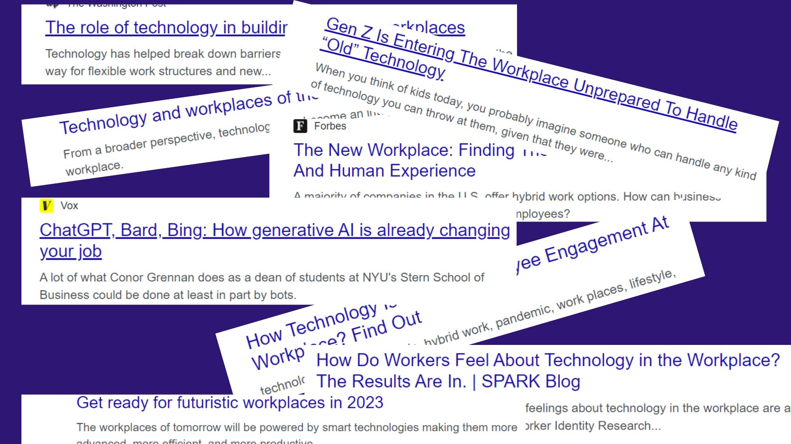
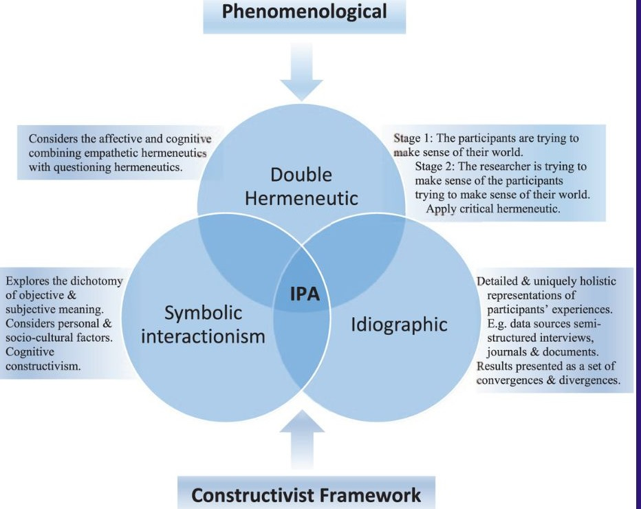
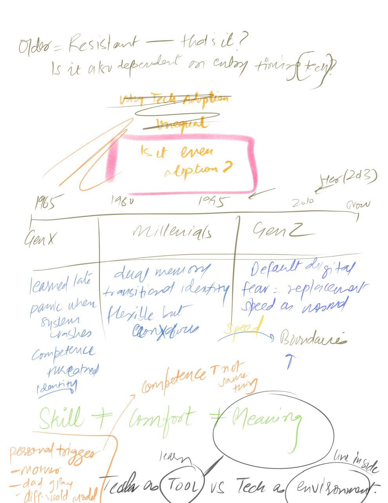

The Tech-Age Conundrum: Generational Differences in Workplace Technology Adoption
Five generations now share the modern workplace. They were not all born into the same technological world. This thesis asks what happens when they are asked to work in the same one.
MethodQualitative IPA + Thematic Analysis
Samplen = 10, ages 21–60
Themes9 emergent themes, 3 phases
FrameworkMannheim + Constructivism
The Work
Motivation
Where It Started
In 2013, the film Her depicted a man who falls in love with an operating system that understands his emotions and desires. It raised a question that never left: what happens when technology becomes indistinguishable from human connection? And if we are already there — what does that mean for people who arrived at this world from a very different starting point?
The answer came closer to home. Watching parents struggle with technology that younger people navigate without thinking — not out of stubbornness, but out of a genuinely different relationship with how the world works. The gap is not about intelligence. It is about when you arrived.
"It is only when they go wrong that machines remind you how powerful they are."— Clive James
Cultural Evidence
The Gap, Before the Data
Before interviews, a cultural scan. These images circulate without commentary because they need none. They are the generational gap — compressed, shared, and recognised instantly by everyone inside it.

Aspiration vs. RealityGen Z entering the workforce optimistically — watched by every generation that tried the same thing.
Communication RegistersEach generation's humour reflects its anxieties. What you laugh at reveals what you live with.

Work Style ArchetypesThe same outcome approached through four entirely different frameworks. "Aren't you all the same?"
Emotional LabourProcessing the same workplace stress across four generations. Therapy vs. suppression.
Memes are not decoration. They are evidence — peer-reviewed by millions of shares — that generational difference is lived, felt, and immediately recognisable to those inside it.
The Public Conversation
What the Press Was Already Saying
Forbes, The Washington Post, Vox — the framing varies but the anxiety is consistent. Something is shifting in the workplace, and nobody quite agrees on what it means yet. When the same anxiety appears across publications simultaneously, it points toward something worth investigating seriously.

Conceptual Framework
When Did Technology Enter Your Life?
The core argument: the timing of arrival shapes the relationship. Gen X adopted technology mid-career. Millennials grew up alongside it. Gen Z was born into it. These are not biographical footnotes — they are the source of fundamentally different assumptions about what work is, what competence looks like, and how communication should function.
Fig. 1 — Conceptual rendering of generational technology adoption trajectories. Not a data plot — a meaning map. The curves represent relationship to technology, not skill level. Nimisha Garg, 2024.
Research Design
Five Questions This Study Set Out to Answer
RQ1
What are the work experiences and characteristics of different generational cohorts in technology-mediated workplaces?
RQ2
How do generations approach challenges in the workforce — and are certain generations more resistant to change?
RQ3
How does technology use impact behaviour and work habits of different generations, and what factors drive those differences?
RQ4
What are the potential impacts of AI on workplace behaviour — and how do different generational cohorts perceive and respond to them?
RQ5
What attitudes and perceptions do different cohorts hold toward technology at work, and how do these shape their behaviour and interactions?
Methodology
Interpretative Phenomenological Analysis
The study adopts a constructivist paradigm — knowledge is not extracted from participants, it is co-constructed through meaning-making. IPA holds two interpretative commitments simultaneously: understanding what the experience means to the participant, and what the researcher makes of that meaning. This is the double hermeneutic.

Phenomenological
Explores how participants make sense of their world. Combines empathetic hermeneutics (understanding) with questioning hermeneutics (interrogating the account).
Idiographic
Detailed, holistic representations of individual experience. Semi-structured interviews. Results are convergences and divergences — not averages.
Double Hermeneutic
Stage 1: participant makes sense of their world. Stage 2: researcher makes sense of the participant doing that. Both layers remain live in the analysis.
Constructivist Framework
Knowledge is shaped by social and cultural context. The researcher's positionality is acknowledged, not bracketed out. Symbolic interactionism throughout.
Phase I
Literature Review
Mannheim (1952), Twenge (2019), Pew Research Center (2019). Google Scholar, ScienceDirect, PubMed. Generational theory, workplace behaviour, technology adoption.
→
Phase II
Data Collection
n = 10
Semi-structured interviews, 60–90 minutes. Conducted virtually. Audio-recorded, transcribed verbatim. Purposive sampling: Gen Z, Millennials, Gen X. Ages 21–60.
Three Cohorts. Three Relationships with Technology.
Participants were not selected to represent — they were selected to illuminate. Purposive sampling across three generational cohorts, each carrying a distinct formative relationship with technology shaped by when they first encountered it.
Gen Z
b. 1996–2012
Digital natives. Technology was not adopted — it was inherited. Core anxieties: job displacement by AI, recession, downward sloping job market. Core drive: prove value in a world that might not need you.
Technology relationship
Adaptive by default. New tools require tweaking existing skills. The anxiety is not about using technology — it is about being replaced by it.
Gwyen, 25
Writer, Marketing & Communications
Uses post-its and Notion simultaneously. Does not see them as in conflict.
Saransh, 23
Research Assistant, LSE
"The recession and the downward sloping job market — it is a worrying sign. A huge red flag."
Millennials
b. 1981–1995
The transition generation. Grew up alongside the internet rather than into it. Remember both worlds. Individually driven but socially motivated. Both optimistic about the future and realistic about the present.
Technology relationship
Comfortable, adaptable, acutely aware of the pressure of constant connectivity. Work-life balance is a technology problem as much as a scheduling one.
Ishani, 23
Writer → Food Expert, TV Show
Works in mar-tech. Stays in trend. Calls herself "a complete noob when it comes to technology."
Shambhavi, 29
Analytics Consultant, Denmark
Data science is her medium. Technology is not a tool — it is the environment she works inside.
Gen X
b. 1965–1980
Adopted technology mid-career. 23+ years of professional experience in environments that looked very different at the start. Quick learners by self-report — but genuine fear when things break unexpectedly.
Technology relationship
"I am a quick learner — but I would panic when my laptop randomly stopped working." Learning happens. It needs more explicit scaffolding than younger cohorts assume it should.
Preeti, 51
Senior Professional, MNC — 23 years
"The phases from my first job to now — beautifully cherished." Panic and pride coexist.
Findings — Thematic Analysis
Nine Themes. Three Phases of Analysis.
Three phases, ten participants, sixty to ninety minutes each. What emerged was not a list of complaints about technology — it was a map of how people make sense of change when they did not all start from the same place. Each theme is grounded in participant accounts, not inference.
01
Resistance to Change
Fear of the unknown. Inertia from comfort with existing practices. Challenging for older employees to adapt — not impossibility, but discomfort with pace.
"Reluctance to unlearn and learn."
02
Psychological Obsoleteness
Not just lacking skills — feeling unable to cope. Resistance to training as self-protection. A dignity issue. Being psychologically outdated in an accelerating world.
"Older generations don't like to learn because they are scared."
03
Impact on Work Habits
Digital tools give flexibility and simultaneously make it impossible to switch off. Increased efficiency and blurred boundaries are the same phenomenon experienced differently.
"I can't switch on and off very easily."
04
Workplace Culture
Communication practices and management styles shift with generational mix. Inclusion requires active design — not assumption. Clearing the air, not sweeping under the carpet.
"Inclusive workplaces lead to creativity and innovation."
05
Impacts of AI
AI replaces entry-level tasks. Managerial judgment remains necessary — for now. ChatGPT is brilliant and terrifying simultaneously. Participants across all cohorts felt both things at once.
"ChatGPT is essential — until it takes away jobs."
06
Career Development
Upskilling must be continuous and cross-generational. Older employees need newer ones to teach them. The knowledge transfer is bidirectional — this is underused in most organisations.
"Train everyone. Do not create age segregation."
07
Work Ethics
Boundaries around personal time are maintenance, not laziness. "I deny work beyond working hours until absolute emergency." Mutual respect does not flow from hierarchy — it must be built.
"Respect everyone. Not because of age or hierarchy."
08
Future of Work
Mundane jobs will be replaced. When some are taken, more are created. The human element — creativity, compassion, emotional intelligence, instinct — remains irreplaceable. All cohorts agreed on this.
"We need human brain, human creativity, human instincts."
09
Generational Challenges
Communication clashes. Micromanagement tensions. Perspective conflicts in collaboration. The solution is not waiting for older generations to retire — it is building enough common ground now.
"Give older employees time. You can't expect overnight adaptation."
Central Finding
The technological gap in the workplace is not primarily a skills problem. It is a meaning problem — different generations have built different relationships with technology, and those relationships carry different assumptions about what work is, how communication should function, and what it means to be competent. Closing that gap requires more than training. It requires translation.
First Thinking
Started Without Any Framework

This page was drawn before any framework was formalised.
The crossed-out assumptions remain visible intentionally — this was exploration before structure.
Honest Accounting
Limitations
A study that does not name its constraints cannot be fully trusted. These are not apologies — they are part of the argument.
Sample size
n = 10 achieves thematic saturation but limits generalisability. More participants would have captured more nuance and more sub-themes within each of the nine areas.
Cohort imbalance
The study did not achieve gender balance or equal numbers across generational cohorts. This affects the representational weight of each cohort's findings.
Scope
Three cohorts, specific industries, qualitative only. Findings may not translate to other generational groups, cultural contexts, or quantitatively measurable outcomes.
Methodological alternatives
Grounded theory or ethnographic approaches could have produced different insight. IPA was appropriate — but it is not the only appropriate method for this question.